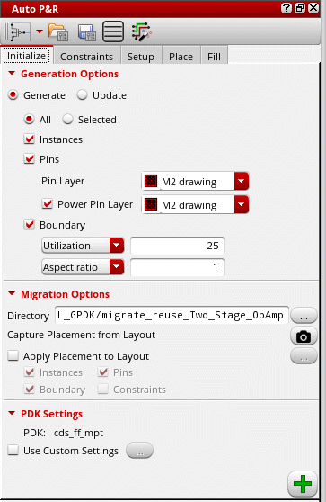
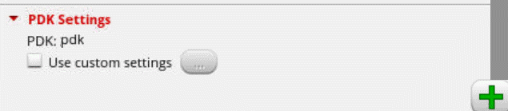
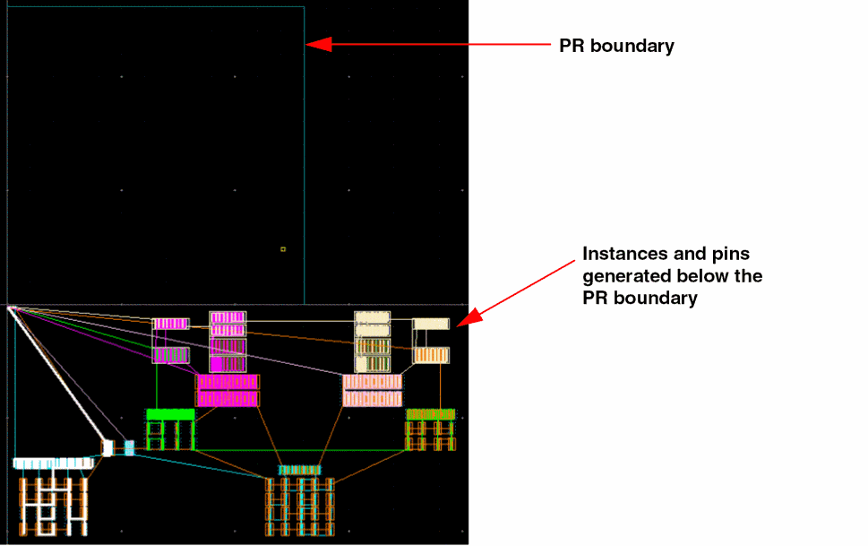

Initializing a Layout in the Automated Device Placement and Routing Flow
To initialize a layout view in the automated device placement flow:
- Open the Initialize tab of the Auto P&R assistant.
-
Expand Generation Options and select Generate to generate new objects in the layout canvas or Update to update the existing objects.
 - Set the scope of layout generation to either All or Selected.
- Select Instances to generate all instances from the source schematic.
- Select Pins to generate pins during initialization.
- Select an LPP from the Pin Layer list that contains the device pins to be generated. The default value is the first metal layer in the layer stack.
- Select Power Pin Layer to generate power pins.
- Select an LPP from the Power Pin Layer list that contains the power and ground pins to be generated during initialization.
- Select Boundary to generate a PR boundary as per the specified combination of Utilization and Aspect Ratio or Width and Height.
- In Layout MXL, the Migration Options section is available, which lets you run the assisted flow of the Virtuoso® Custom Design Migration solution. For more information, see Setting Options for Custom Layout Design Migration.
-
Select Use custom settings to load PDK settings from a file. This option is useful for loading addition CDF parameters that are applicable only at lower nodes.
 - Select a file that contains the required PDK package API definition.
-
Click Apply to generate the selected objects in the layout canvas. All the instances and pins are generated below the PR boundary.

Environment Variable Settings
The following environment variable settings are applied during layout initialization:
|
|
|
|
|
|
|
|
|
|
|
Related Topics
Return to top